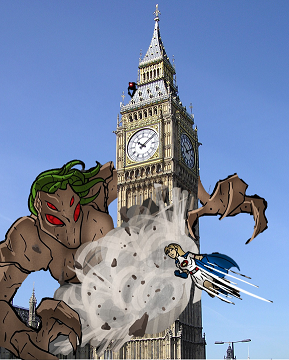
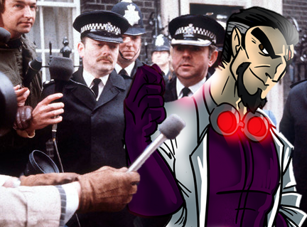
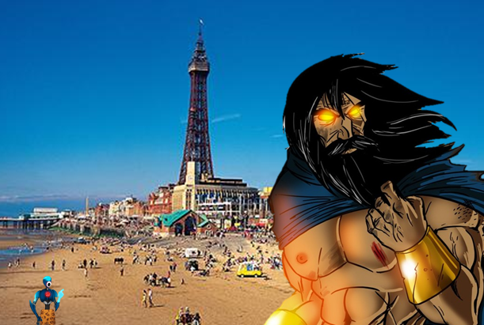

55 posts · 5512 views · started 2014-03-30 22:41 UTC
JA
jagarciao
2014-03-30 22:41 UTC
#1
Once again we have another awesome >Games KS campaign where, through no fault of anyone in particular, overseas backers have to pay huge premium to get the game, which can deter some from backing at all. So like many here have done in the previous campaigns, I'd like to offer to cover the shipping costs for one (for now) overseas backer of Sentinels Tactics.
It's always tough to figure out how to choose who to help out since first come first served seems arbitrarily biased towards those who are always on their computers and those who happened to be geographically advantaged by living in a place where it isn't some ungodly hour right now... asking people to tell me why they deserve it or to prove that they are the greatest fan feels too much like a job interview at best (and like an awfully exploitative "dance for me monkey" scene at worst) so we'll avoid that too. Instead I'll just ask that any of you interested in getting you shipping covered by me simply post a picture of your favorite Multiverse character at a local landmark in your town on this thread. The coolest one will receive free shipping (there may be multiple awards if there are really cool ones and if I have extra funds).
OK... The Rules:
- You must have joined this forum prior to me posting this thread (I really want it to go to someone who is a part of this community).
- You must be an overseas backer (the ones that have to pay $40 shipping).
- The landmark picture must be yours and not downloaded from the internet (not that I can really check it... but honor system and all that).
- The Multiverse character may be added to the picture by any means necessary (drawn in, photoshopped, picture of a card or fan art taken at the landmark, etc.)
- Any representation of a Multiverse character is acceptable (card, official art, fan art, cosplay, etc. ).
- One entry per forumite.
- Pictures must be submitted by the end of next Sunday, my time... 11:59 pm PST (GMT -8).
OK. I think that's it.
CR
Craig
2014-03-31 01:24 UTC
#2
Dude, you're awesome. That is all.
DA
danmarshall14
2014-03-31 13:46 UTC
#3
I'm also going to have to agree to the awesomeness. You're a kind person.
Just a question; how do you go about paying for someone's shipping? Do you do it through Paypal or something?
I'm asking because I may be interested in offering a hand to my international brothers and sisters as well. I can't say for certain I'll be able to do it; my income isn't off the charts or anything (and I just got done paying for a huge snowboarding/cabin trip I had been saving up for). But if I can do something to help the community, I'd like to at least look into it. Perhaps once I get a good estimate of what my tax returns will be looking like, I'll be to able to help at least one international backer cover those gross shipping costs.
JA
jagarciao
2014-03-31 14:16 UTC
#4
It's much simpler than that, you just have to raise your pledge by the proper amount ($40 per backer) and have the international backer pledge without including the shipping cost. When the Kickstarter is done and GTG sends out the survey, Sponsor Y will write on the notes "I am paying the shipping for Backer X", and Backer X will write "My shipping is being paid by Sponsor Y". If the messages match, it's a done deal.
... if they don't... the timeline shatters. True story.
I am simply following the good example set by other kind forumites a before me. :)
DA
danmarshall14
2014-03-31 14:39 UTC
#5
Oh jeez, talk about pressure.
Wow that does sound like a pretty smooth process. If that is something I decide I'm able to do, I'll for sure either update this topic with the news or make a new one; the thought of helping the community stick together gives me warm fuzzies inside.
AR
arenson9
2014-03-31 14:54 UTC
#6
jagarciao, if you are willing to pick a winner for me, I will also pledge to cover international shipping for one forumite.
AR
Ario
2014-03-31 15:07 UTC
#7
I would be happy to do the same as arenson, jagarciao, if you could pass a name my way.
JF
jffdougan
2014-03-31 15:29 UTC
#8
I, on the other hand, will provide a "wild card" entry. I plan to get a picture of some arrangement of cards near a local landmark and submit it. I'm not a backer, and live domestically, but it's fun anyway. If my entry is chosen, I'll re-assign the win to some other international entrant.
JA
jagarciao
2014-03-31 16:41 UTC
#9
Nice. The purpose was to get a nice mix of "Sentinels around the World" for a fun collage, so anyone is welcome to submit pictures.
The awards will just go to the International Backers.
DO
Donner
2014-03-31 22:29 UTC
#10
I would like to support one international shipment as well.
JA
jagarciao
2014-03-31 22:40 UTC
#11
Cool! That's 4 offers of shipping sponsorship on the table!! I can't wait to see the creative submissions!
And to make sure this really isn't a "dance for me, monkey" type of situation, I will be sure to post up a submission of my own as soon as I get the chance. It'll probably not be until Wednesday, though.
P2
Powerhound_2000
2014-04-03 17:46 UTC
#12
I'm willing to fund a person for international shipping.
BA
Bas
2014-04-04 08:16 UTC
#13
Hej you all,
First of all, I really appreciate this initiative to help out Overseas backers and I love the idea of the local landmark-sentinels integration. Therefore, here is my submission:
The local landmark seen in the picture is the Green Flames sculpture in Umeå, this year's European Capital of Culture. Recently it was revealed that a student who helped assembling the sculpture in 1970 glued a picture of the Chinese leader Mao Zedong between two glass plates near the top of one of the flames. However, here you can see that they missed the oversized card of Setback worked in halfway one of the flames by Ra and Absolute Zero, who were sick and tired of having their setups being wrecked by the jolly 'helper' ;-).
PS.: Since I haven't been a very active part of this community, please don't hesitate to fund shipping for a member that has been more active.
That is awesome and exactly the kind of stuff I wanted to see!!
We have 5 sponsors so far. So your chances are definitely looking good!!
JA
jagarciao
2014-04-06 20:12 UTC
#16
Only one submission so far and 5 offers of sponsorship!!
ME
Mezike
2014-04-06 22:02 UTC
#17
Something like this? Not my own landmark pictures I'm afraid. I have already received a generous offer to have my shipping paid but thought I'd join in
++++ URGENT BREAKING NEWS ++++
(Reuters, London, 10:12 a.m.)
+++ Calamity on streets of London as supernatural giant being terrorises national landmark +++ witnesses report superhero Pauline Parsons engaging in a titanic battle to protect US tourists. Oh, and some local people too +++
+++ reporters gather outside number 10 for a press release, only to find a sudden regime change. 90% of UK residents polled admit that their new despotic overlord is a masive improvement over David Cameron +++
+++ Premier member of America's crime fighting force is located on Blackpool beach and asked about his potential plans to intervene. His response is "flippin' eck, ah'm reet frozzed, an out fer teh maffin' ta top up ma tan, can that ladgin buewer not organise th' fat bobbies herself, or as I hav'ta threp that mardy bum missen?" +++ our investigative reporter is now seeking a translator fluent in either Ancient Egyptian or gibberish, they are not quite sure which is required +++



SI
Silverleaf
2014-04-07 00:23 UTC
#18
I actually understood that.
PH
phantaskippy
2014-04-07 00:41 UTC
#19
Brilliant work Mezike, that was awesome.
SO
soul31
2014-04-07 00:56 UTC
#20
Hello all, me and my bf are from Wrocław, Poland. We are big fans of the Sentinels of the Multiverse franchise and backers of Shattered Timelines with help of forum member with shipment cost (thanks again you are the best).The picture depicts our Town Hall. Our city will be the European Capital of Culture in year 2016. Our city is known as one of the biggest centres of culture in our country and we have a ton of bridges and a ton of metal dwarves. Sometimes I wonder if we're not suffering from bridge building dwarf infestation. Fan art was created by our friend Gwen, thanks again :) So yeah, dwarves - best way to conceal something, and they're pretty inconspicious, all better for another crazy plan of mad Baron Blade!
Well, the deadline for submissions has come and gone and we had two submissions. So they are both winners in my book (especially since we had five potential sponsors).
So the sponsor-international backer pairings will be:
jagarciao - Bas (Green Flames sculpture - Umeå, Sweden)
arenson9 - soul31 (Town Hall building - Wrocław, Poland)
Thank you all for participating!!
Keep the pictures coming if you have them!
AR
arenson9
2014-04-07 20:50 UTC
#23
There was a deadline?!
Congratulations to our submitters!
JA
jagarciao
2014-04-07 21:09 UTC
#24
I had put a deadline in the original post. Sorry if that wasn't super clear there. We have additional sponsors who offered to cover shipping costs for backers, so if they want to extend the offer for a longer period, they are welcome to do so. I just didn't want to speak for them.
BA
Bas
2014-04-08 05:54 UTC
#25
Hej All,
Thanks for the help, this means a lot for me at the moment.
Btw, I hope that some more "landmark sentinel pictures" come in, as it is interesting to see where people are coming from.
SI
Silverleaf
2014-04-08 11:53 UTC
#26
I mean to do a landmark picture, because I love the idea.
PH
phantaskippy
2014-04-08 12:25 UTC
#27
I'd like to see more submissions, and on Monday if I survive PAX without car trouble, or too much booze purchasing, I will be interested in adding my name to the list of willing sponsors as well.
JA
jagarciao
2014-04-08 16:35 UTC
#28
Ok, I'll throw one up just for fun. This was the obvious one that came to mind first and was pretty easy to put together (and it's not my picture really, but as it is not an actually submission...)
Los Angeles City Hall (and the L.A. times building)
brilliant! My three favourite things, all in one picture!
JU
Julia
2014-04-14 11:50 UTC
#31
Not enough pictures on this thread!
My landmark the huge, Gothic, dual-spired, Cologne Cathedral that houses the Shrine of the Three Kings and the Richter window which is a church window that essentially looks like a bunch of pixels. The Cathedral is apparently Germany's most visited landmark and it's a World Heritage Site. There are also fun legends about it, like Satan trying to sabotage the construction of the Cathedral.
It's kind of hard take a good picture when you are up close because it is so big - plus my camera blurred the background something fierce. I probably could have taken a better photo of the cathedral from my window, but that would have robbed me of the joy of trying to balance two Lego Minifigs on an uneven section of Roman masonry on a windy day.
So my friend from my RPG club is moving away in a few months, and won't be able to play with my copy of Tactics. He played Tactics with us today, and loved it, and is seriously considering backing it.
I know this is extremely cheeky (and he doesn't know I'm asking), but I thought I'd see if one of you lovely people would consider helping him out with international shipping. I sort of feel bad that I made him want the game I'm getting way after he moves away!
I don't mean to take advantage of anyone's kind nature or anything because people have been very generous already, but I figured it was worth an ask. Hope non-one's offended/annoyed, etc.
AR
arenson9
2014-04-20 23:59 UTC
#33
One way to spin this would be for you to post a picture and ask for a donation. If you get it, then you could afford to help your friend with a donation.
SI
Silverleaf
2014-04-21 00:32 UTC
#34
That's a good idea! I can do that. :)
PW
pwatson1974
2014-04-21 08:57 UTC
#35
Silverleaf,
Could you PM me regarding this, please?
DO
Donner
2014-04-21 16:29 UTC
#36
Especially considering so far there are fewer accepters than offerers at the moment.
SI
Silverleaf
2014-04-21 18:39 UTC
#37
Okay, I have a picture.
My hometown is Chesterfield, which is most famous for having a crooked spire on the big church in the town centre (the spire's deliberately twisted 45 degrees, but also leans 9 feet 6 inches (2.90 m) from its true centre.) Interesting fact about me: straight steeples look weird to me because I'm so used to the "normal" crooked one.
Anyway, it would have been easy to choose to use a photo of the spire in all its bent glory, but I thought I'd go with one of our famous residents - George Stephenson, the "father of the railways" who who built the first public inter-city railway line in the world to use steam locomotives, the Liverpool and Manchester Railway which opened in 1830. His most famous locomotive was the Rocket. This He spent his last 10 year here and is buried in a church here too. Another interesting fact: he's buried inside the church, but there's a George Stevenson (note the different spelling) in the graveyard - this fools people, and they go away with grave rubbings and photos of a completely unrelated and unremarkable man's headstone.
Of course, he's not around to take photos of anymore, but there's a statue of him outside the railway station.
Fun story about George Stephenson. I wrote a short steampunk story with him as the main character once. That's some neat stuff.
JF
jffdougan
2014-04-21 18:52 UTC
#39
If anybody has a interest in more strategic board games, Stephenson's Rocket is interesting to play at least once.
RA
Rabit
2014-04-21 19:49 UTC
#40
That's an awesomely-done shot, Silverleaf! Love the meta-references.
AR
arenson9
2014-04-21 19:56 UTC
#41
Good stuff!
AM
Amnachaidh
2014-04-21 20:08 UTC
#42
Love it, Silverleaf! I am well in the U.S., but I wanted to share the structure my town's most famous for:

There's so much you just can't say about it. I want to photoshop a picture of Plague Rat scaling the thing, because water towers and vermin are terrible together, and rather Joker-like
AR
arenson9
2014-04-30 15:40 UTC
#43
Just fyi, I just sent in my Kickstarter survey response identifying soul31 from Wroclaw, Poland as the recipient of my int'l shipping funds.
SO
soul31
2014-04-30 15:51 UTC
#44
Thank you - we will take care of the survey today or tommorow :)
DO
Donner
2014-04-30 15:52 UTC
#45
I was just looking for this thread...
JA
jagarciao
2014-04-30 17:13 UTC
#46
My Kickstarter survey has also been filled identifying Bas as the recipient of my international shipping funds.
Hopefully the pictures keep coming though (I should probably change the thread title to reflect that though... as soon as I figure out how...)
PH
phantaskippy
2014-04-30 19:51 UTC
#47
You can edit the title when you edit the original post.
BA
Bas
2014-05-01 08:24 UTC
#48
My Kickstarter survey has also been filled in, acknowledging Jagarciao as the awesome donator of the international shipping funds.
Thanks again to all of you donators!!
DO
Donner
2014-05-01 19:31 UTC
#49
Anyone else need someone to help out? Silverleaf, wa yours taken care of?
SI
Silverleaf
2014-05-01 23:29 UTC
#50
My shipping's covered, thank you. But if someone wanted to pay for shipping for the add-on, I wouldn't complain! ;P
DO
Donner
2014-05-02 14:21 UTC
#51
Consider it done then. :D
SI
Silverleaf
2014-05-03 00:48 UTC
#52
Seriously??
DO
Donner
2014-05-03 15:17 UTC
#53
Done and done. As I said.
SI
Silverleaf
2014-05-03 18:53 UTC
#54
Wow, that's amazing, thank you! You're awesome! :) And my group thank you too. Yay!
NA
NAL0781
2014-05-07 00:54 UTC
#55
My college town, Ypsi. I can recognize that a mile away, the campus is on the left. Recently have visited a few times to see an old college friend.
Ehmmm, sorry for the off topic excursion.
I am in the U.S. but I think what this thread is about, helping the international backers, is really awesome. A great sense of community.